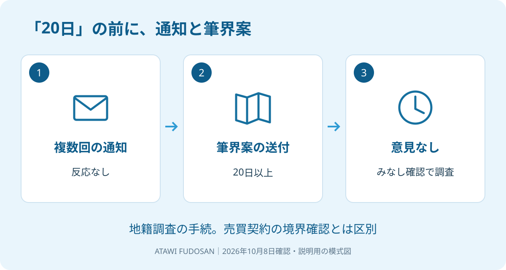

実家の土地について、地籍調査の通知が届いた。立会いの日に行けないまま置いてある。そのとき「20日たてば境界を確認したことになる」と聞いても、最初の通知から日数だけを数えて判断しないでください。
大石浩之（磐田市／不動産業）です。私は、売るかは保留でも、土地の通知への返答は保留しないよう案内します。2026年10月8日に確認した国土交通省の発表をもとに、制度の順番と売却準備を分けて説明します。
20日は最初の連絡から数える話ではない
土地境界のみなし確認制度は、地籍調査で、現地調査等の通知に反応しない所有者等がいる場合の手続です。国土交通省は2024年6月27日に発表し、改正省令の公布・施行日を翌6月28日としています。2026年に新設された制度ではありません。
同省の発表では、現地調査等の通知を複数回行っても反応がない場合、所有者等へ筆界案を送付します。20日以上たっても意見の申出がなければ、筆界を確認したものとみなして調査を進められる、という順序です。
筆界は、ここでは登記上の土地一筆と隣の土地との区切りを指す言葉です。筆界案は、調査で示されたその区切りの案と捉えてください。塀の位置や、家族が普段庭として使っている範囲と、同じだと決めつけずに資料を見ます。
| 発表に示された段階 | 読み違えないための確認 |
|---|---|
| 現地調査等の通知を複数回実施 | 最初の一通だけの話ではない |
| 反応のない所有者等へ筆界案を送付 | 土地の区切りの案を確認する段階がある |
| 20日以上経過しても意見の申出なし | 最初の連絡から単純に20日ではない |
| 確認したものとみなして調査を進められる | 対象は地籍調査の手続 |
意外に感じる方もいると思いますが、「返事をしなければ調査も止まる」とは限りません。ただし、家族が勝手に日数を数え、すでにみなし確認になったと結論を出すのも違います。個別の進行状況は通知の差出人へ確認します。

届いた通知と筆界案を同じ机に置く
地籍調査の通知を受けた持ち主は、通知書、添付図面、対象の土地が分かる資料を揃えて確認します。私は、文書の名称と差出人を最初に見るよう勧めます。地籍調査の案内と、隣地の売買に伴う立会依頼を混同しないためです。
図面には、どの土地の、どの線について確認を求められているかを探します。普段の住所だけでなく、土地を特定する地番も照合します。実家の建物が載る土地だけでなく、別の土地についての通知である可能性も、資料で確かめます。
家族で確認するときは、封筒も一緒に残しておくのが私の提案です。宛名、差出人、書面の日付、受け取った日を分けてメモできます。ただし、受取日を自己判断で法的な期限の起点としないでください。回答期限と回答方法は担当窓口に聞きます。
図面の見方が分からない、線が記憶と違う、現地へ行けない。そのどれでも、まず担当者へ連絡します。疑問があるなら対象の線や資料を具体的に示し、意見を伝える方法を確認します。曖昧なまま「了解」とだけ返すのも避けたいところです。
通知が手元にない相続人は、持っている家族に全ページの共有を頼みます。表紙だけの写真では、図面や回答欄が抜けることがあります。名義や代理での対応に関する個別判断は、調査担当者と司法書士などの専門家に確認を。
調査を進める仕組みの良さと、持ち主への注文
国土交通省は、土地の境界や所有者を明らかにする地籍調査を進めるため、手続を見直したと説明しています。みなし確認は、複数回の通知にも反応がない場合を扱う仕組みとして設けられました。
私は、返答がないために調査が進まない状況に、一定の手順を用意した点を評価します。筆界案を送る段階があることで、何を確認するのかを資料で見る機会もあります。土地の資料を整えることは、将来の売却を検討する家族にも役立つ入口になります。
そのうえで、持ち主側には通知の保管場所と連絡担当を決めてほしいと思います。親の施設入居後、郵便物を誰が受け取るか決まっていないと、家族の中で通知が止まりかねません。売却の意思決定と、届いた文書の確認は分けて進められます。
私自身、忙しい家族にどこまで資料集めを頼むかは迷います。最初から過去の図面をすべて揃えるよう求めれば、連絡そのものが遅れるからです。手元の通知だけでも担当窓口へ連絡し、不足する資料は後から確認する順番を提案します。
不明な線がある場合は、所有権の範囲など別の問題を含むかも、土地家屋調査士や弁護士へ相談します。図面を見ただけで不動産会社が争いの結論を出すことはできません。誰に何を確認するかを分けることが、実務家としての私の役割です。
地籍調査と売買の境界確認を分ける
土地境界のみなし確認の発表は、民間の土地売買で境界確認書が不要になるとは説明していません。私は、地籍調査がどう進んだかと、売買契約で何を約束するかを別々に確認します。
売却準備では、手元にある調査成果、図面の内容、現地の境界標、買主に渡す資料を並べます。そのうえで、売主がどこまで確認し、引渡しまでに何を行う契約にするかを相談します。「調査済み」という一語で全部の確認が済んだ扱いにはしません。
磐田市の資料の確認については、地籍調査成果の閲覧と売却準備で整理しています。過去の成果があるかを聞くことと、今回届いた通知へ答えることも別の作業です。回答期限がある通知を、資料収集が終わるまで寝かせないでください。
売買面積の決め方を相談する場合は、公簿売買と実測売買の違いも参照できます。登記簿に書かれた面積を使うのか、測量した面積で扱うのかという契約の話を、みなし確認の説明と混ぜないためです。
道路などに接する土地では、袋井市の官民境界の申請のように、別の確認先が関わることもあります。今回の通知が何の手続きかを確かめ、必要な追加作業を土地家屋調査士などへ相談します。
私は、資料が揃う前に「境界の心配はありません」と買主へ伝えません。分かっている内容と未確認の内容を分ける方が、売却条件を組みやすいからです。資料に疑問が残る場合は、契約日や引渡日を先に固定しないよう案内します。
磐田・袋井の土地で今日確かめる窓口と期限
磐田市・袋井市の個別の土地が、いつ調査され、いつ通知が発送されたかは、国土交通省の全国向け発表からは分かりません。持ち主の方は、届いた通知に記された窓口へ、対象地と現在の手続段階を確認してください。
私はこう考えます。実家の郵便物を整理する場面なら、地籍調査の通知は、売却するかを話し合う箱へ戻しません。通知と図面を一組にして、家族の連絡担当へ渡します。電話で聞くのは、対象地、回答期限、行けない場合の連絡方法です。これは現場の実話ではなく、私の提案です。売るかを考える時間を残すためにも、先に期限のある文書だけを取り出したいのです。
- 文書名と差出人を見て、地籍調査の通知か確かめる。
- 筆界案の対象地と、回答期限・方法を窓口に聞く。
- 売買の資料と約束する作業は、別に整理する。
富士ヶ丘サービスは、磐田・袋井で介護と不動産を一体で相談できる窓口です。家族が困らない売却のため、私は通知の整理から専門家への相談をつなぎます。売却の結論は今日出さなくても、通知への連絡は今日進められます。